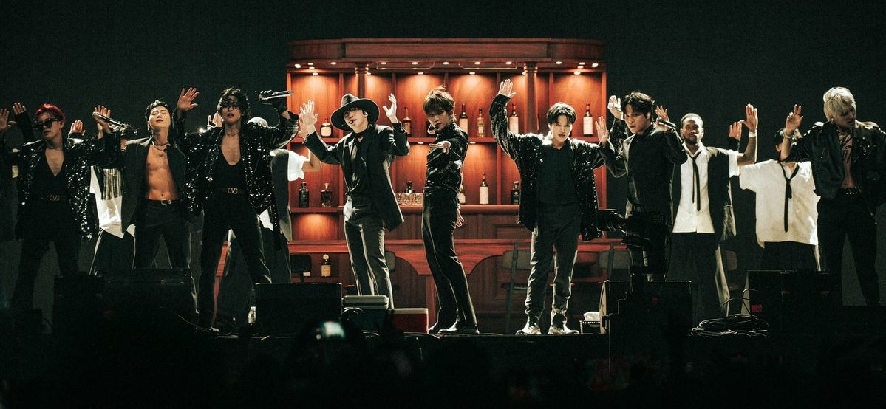

↓ ATEEZ Lore (FEVER-GOLDEN HOUR) ↓

The ATEEZ lore is a complex and multidimensional narrative that follows eight young men on a journey of resistance against oppression, using music and art as tools of liberation. The story is mainly divided between two worlds: World A (our reality) and World Z (a dystopian world where emotions are forbidden).
About the Order of the Lore:
The TREASURE series was the first series released by ATEEZ, marking the group's debut with Treasure Ep.1: All to Zero. However, there is an important distinction between the release order and the chronological order of the story.
Although TREASURE was released first (2018–2020), the ZERO: FEVER series, which began in 2020, is generally understood as a prequel and the chronological beginning of the lore. It explains how the eight members met in World A, their individual struggles, and how they first encountered the Cromer.
In TREASURE, the focus is more symbolic and centers around the members' journey as pirates in search of their "treasure," which can be interpreted as their dreams, freedom, or sense of identity. The series introduces several important elements of the lore.
The Origin and the Encounter
ZERO: FEVER Series
In World A, the eight members (Hongjoong, Seonghwa, Yunho, Yeosang, San, Mingi, Wooyoung, and Jongho) were lonely young men with different traumas and interrupted dreams who came together through their passion for music in an old Warehouse.
Individual Traumas: Yunho struggled with the loss of his brother in an accident; Mingi and Jongho gave up on their dreams in sports due to injuries or disappointments; and Yeosang lived under the strict control of his parents.
Separation and Reunion: Due to the pressures of reality, the group eventually separated, and the Warehouse was closed down by Yeosang's father.
The Cromer: Hongjoong dreamed of a man wearing a black suit and fedora who gave him the Cromer, a magical hourglass capable of connecting worlds and allowing time travel according to the phases of the moon. When the Cromer was turned, the members were reunited and transported to World Z.
The Discovery of World Z and Yeosang's Sacrifice
World Z is controlled by a central government and the Android Guardians, who use technology to suppress human emotions, considering them dangerous.
The Allies: There, ATEEZ met the Grimes siblings and Left Eye, who helped them understand the local resistance, the Black Pirates.
The Men in Black Fedoras (HALATEEZ): After infiltrating the Guardians' bunker, the group encountered their alternate versions, the Men in Black Fedoras, who were being held captive. They revealed that they had called the original ATEEZ to take on the mission of changing that world.
The Rescue: During a desperate escape, Yeosang sacrificed himself, breaking the Cromer to send the other seven members back to World A while he was captured by the Guardians.
The Resistance and the Awakening
THE WORLD Series
After obtaining a new Cromer and rescuing Yeosang, ATEEZ took on the identity of the Black Pirates. Their goal was to awaken the population from the government's control through artistic performances and the distribution of "breakers" that could disable the emotional-control chips.
The Prestigious Academy Operation: The group infiltrated this elite school to rescue the brother of a young ally and trigger a mass awakening among the students.
The Thunder Group: They discovered that "Thunder," an elite group within the school, was actually an internal resistance movement searching for the location of Z, the supreme leader.
The Fall of Z: The leader of Thunder discovered that the governmental system was flawed. Following a coup organized by ATEEZ and the Black Pirates, Z was confronted and killed, although he attempted to drag Seonghwa with him into World A.
The Return and the New Threat
GOLDEN HOUR Series
After their victory in World Z, the group returned to World A but faced the harsh reality of adulthood. Three years passed, and they eventually gave up on their musical dreams to work ordinary jobs, such as firefighter and flight attendant.
The Breath: Yeosang kept the broken Cromer and a red stone called the Breath. Wooyoung, wishing for the group to regain their passion for music, used the Breath without knowing that the stone was a spiritual entity that feeds on and manipulates emotions.
Emotional Chaos: The Breath began jumping from body to body, making people experience hysterical joy, followed by deep sadness and, finally, extreme shame. ATEEZ had to reunite to hunt down the entity and free people from its influence.
The Final Prophecy: Through a scholar who is the World A version of Left Eye, they discover a legend about the Breath having been given as a gift by a bird-shaped spiritual creature. The narrative ends with the appearance of statues made of bones and earth in cemeteries, suggesting that a new war or threat is about to come.